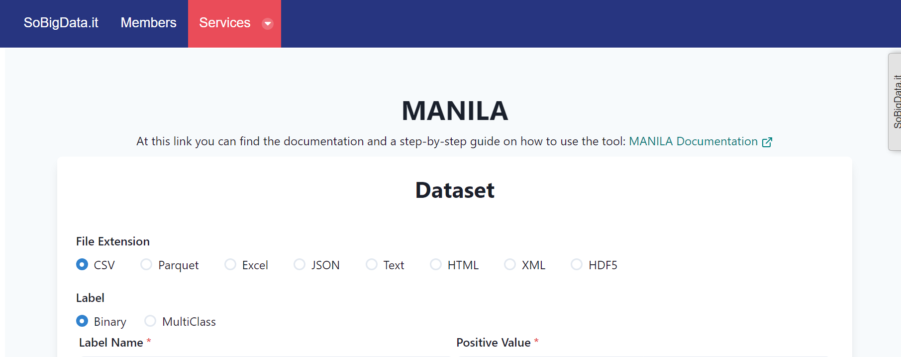
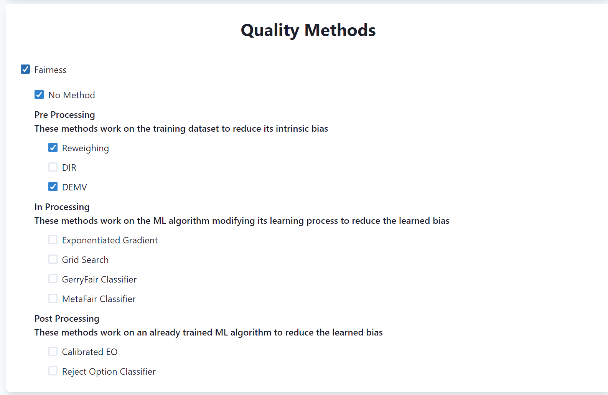
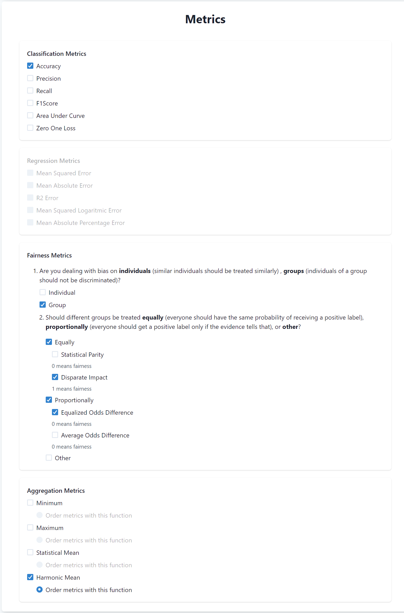
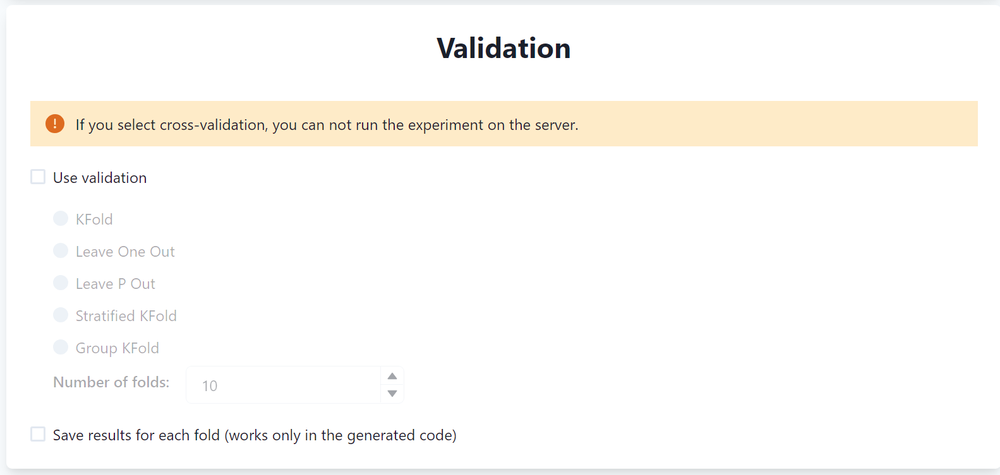

Step-by-Step Tutorial¶
In this tutorial you will use MANILA to perform a fairness and effectiveness evaluation of different machine learning settings (i.e., machile learning model and fairness-enhancing methods) to predict recidivism of condemned people using the well-known COMPAS dataset.
In particular you will evaluate the fairness and effectiveness of the following settings using the following metrics:
Settings: Logistic Regression, and Random Forest with and without the following fairness-enhancing methods: Reweighing, and Debiaser for Multiple Variables (DEMV).
Metrics: Accuracy, Disparate Impact, Equalized Odds.
Finally, you will use the Harmonic Mean as aggregation function to obtain a single score for each setting.
MANILA will independently evaluate each setting using the selected metrics and identify the best setting according to the selected aggregation function.
In the following, we show the steps to perform the evaluation.
1. Obtain the dataset¶
First, you need to obtain the dataset. In this tutorial, we will use the COMPAS dataset. The dataset can be downloaded from here.
Note
At this time, MANILA supports only tabular datasets in different formats (e.g., CSV, Excel, JSON, etc.). The format of the dataset can be specified from the interface of MANILA.
2. Access MANILA¶
Access MANILA from the SoBigData RI. If not already done, you need to register to the system, the registration is free.
After registering to the system you will find MANILA in the catalogue of services by clicking on the catalogue icon in the top bar and by going on the SoBigData Services and Products organisation.
The interface of MANILA is shown below: 
3. Using MANILA¶
MANILA is divided into different sections that allow you to specify the different features of your experiment.
3.1. Dataset¶
The first section requires you to specify information about the input dataset.
The dataset you are using is a
csvdataset, hence specifyCSVin the File Extension field.Next, you have to specify information about the label. In our case, the label is binary and its name in the dataset is
two_year_recid. Finally, you have to specify the positive value of the label (i.e., the one towards the discrimation is performed), which is0in our case.Next, you have to specify the sensitive variables of the dataset (i.e., the ones identifying the protected groups). In our case, we have one sensitive variable named
race. Hence, specify that the dataset has a single sensitive variable and putracein the Variable Name field. Finally, specify the values in the dataset identifying the Unprivileged and Privileged groups, which are0and1respectively.
Note
The values of the sensitive variables must be encoded into numerical values. For example, if the sensitive variable is sex and the values are male and female, then you have to encode them into numerical values (e.g., 0 and 1).
Finally, the dataset has the index encoded into the first column and contains the header. Hence, specify that the dataset has the index column in position
0and that it contains the header.
Eventually, the specification of the dataset should look like the following:

3.2. Scaler¶
In this section, you can specify a scaler to be applied to the dataset. In our case, we will use the Standard Scaler, hence select it from the list.

3.3. ML Task¶
In this section, you can specify the machine learning task you want to perform and the relative ML algorithms. In our case, we will perform a binary classification task using Logistic Regression and Random Forest models, hence select them from the list.
You can also specify to save semi-trained models (i.e., models trained on only the training set) and the training size (i.e., the percentage of the dataset to be used for training). In our case, we will not need to save the semi-trained models and we will use the default value of 80% of the dataset for training.

Note
MANILA will automatically disables ML models not compatible with other selected features. For instance, it will disable ML models not compatible with some selected fairness methods (e.g., Reweighing is not compatible with MLP Classifier).
3.4. Quality Methods¶
In this section, you can specify methods related to some quality attributes. At this time, MANILA contains only methods related to fairness. In future, it will include methods enhancing other quality attributes (e.g., explainability).
In our experiment, we want to evaluate the fairness of the ML methods alone and with the Reweighing and DEMV methods. Hence, select fairness and then check No Method, Reweighing, and DEMV from the list.

3.5. Metrics¶
In this section, you can specify the metrics to be used to evaluate the ML settings in terms of effectiveness and fairness.
The metrics are divided into three sections: Classification, Regression, and Fairness metrics. In our case, the Regression metrics are disabled since we are performing a classification task.
Concerning classification metrics, select Accuracy among the list.
Then, you have to specify fairness metrics. These metrics are divided into group and individual fairness metrics. In our case, we are evaluating group fairness definitions, hence check this option.
Then, metrics are grouped into two main categories Equally fairness and Proportional fairness. Disparate Impact belongs to the first category, while Equalized Odds belongs to the second one. Hence, check both of them and select Disparate Impact and Equalized Odds.
Finally, there is the section to specify the aggregation function to be used to aggregate the different metrics. In our case, we will use the Harmonic Mean.

3.6. Validation¶
In this section, you can specify the cross-validation strategy. You will not use cross validation in this tutorial, hence leave the section unchecked.

3.7. Upload dataset¶
Finally, you can upload the dataset to perform the evaluation on the server. To do so, click on the empty field and upload the dataset you have downloaded at the beginning of the tutorial.
3.8. Run the experiment¶
Finally, you can run the experiment by clicking on the Run button. The experiment will be executed on the server and you will see the results in the Results page.